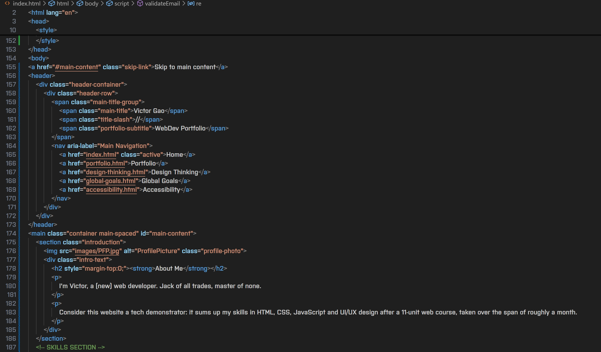
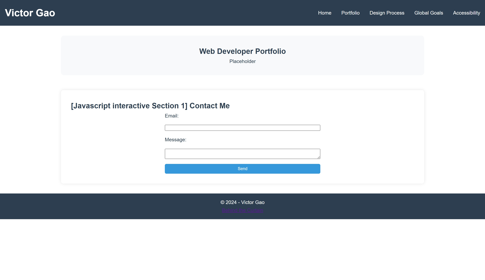

Behind the Curtains (DevLog)
Making of the Website
- Design Decisions Painstakingly rebuilt the website two times so that it would look not generic but also clean. Source of inspiration: Google Material for color and layout, but also Microsoft-style square tile buttons because all round buttons looked bad on my end during dev.
- Challenges during development: Learning new features and adapting them into the code like legos, but in the same time not provoke format destroying errors that would screw up all the existing content.
- Development process: Started out planning the general design/layout, took inspiration from existing sites, then planned navigation, added JavaScript for the modal and toggles, and focused on accessibility with keyboard navigation and semantic HTML.
- Testing and feedback: Checked site in Chrom and Edge under different layouts/sizes/aspectratios, tested keyboard navigation, frequently referred to peer students on how my website looked like and took heavy inspiration from tips they gave.
- Challenges: Not destroying the formatting of the tiles/navigation bar, and make the header banner look consistent throughout different pages, as well as keeping the page sizes consistent.
Code Snapshots:

Sample of intro.html and navbar coding

Screenshot of earlier versions in development. Existing framework and functionalities are noticeable, but aside from this no similarities in later layouts in theme, font, or color scheme.
What I Learned
This project taught me to not procrastinate and to be ready to face development hell - that is, screwing up formats and restarting, as well as stopping development because of unsatisfied self-expectations. Also learned HTML, CSS and JavaScript in small quantities.
Developer tools usage was VScode, Browser inspection console, etc.